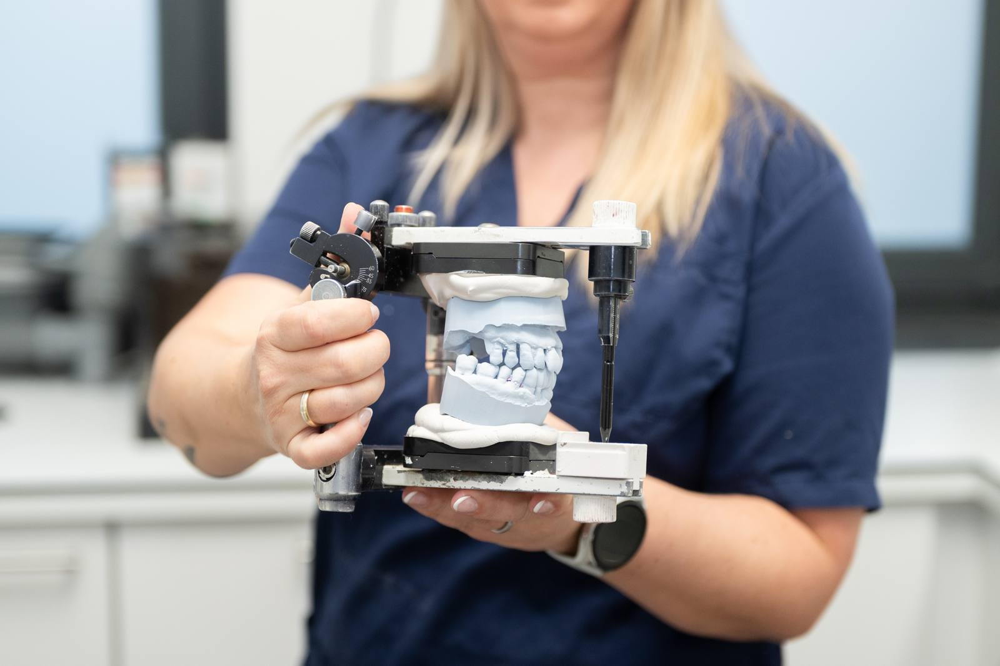
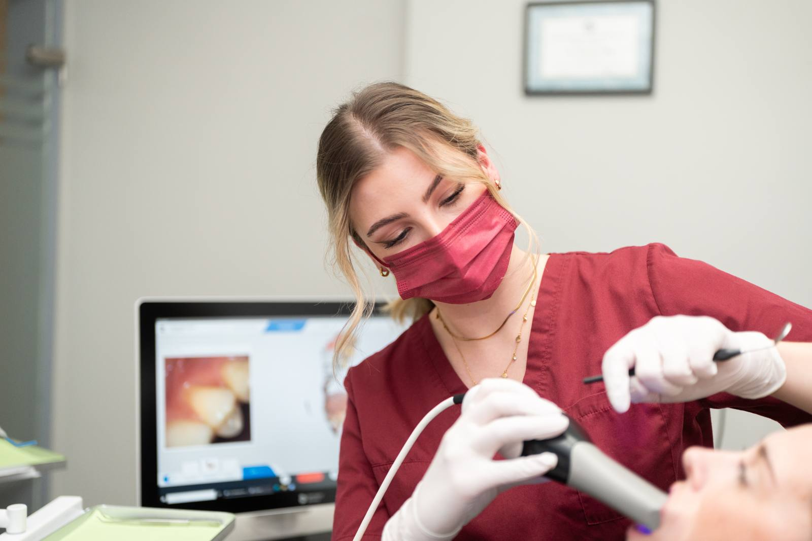
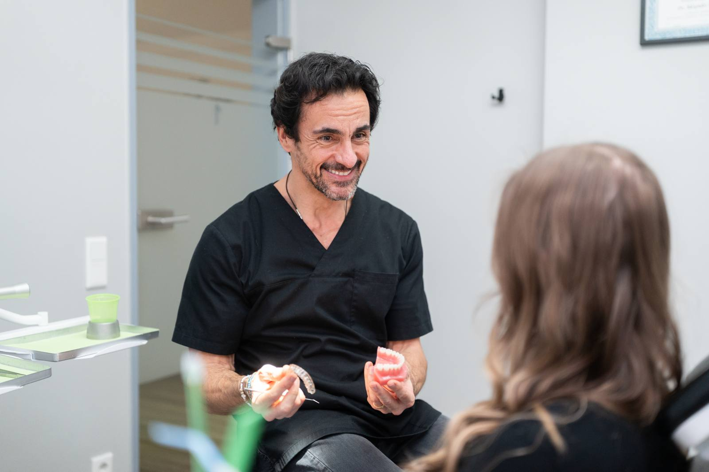

Startseite / Leistungen / Zahnersatz
Zahnersatz in Düsseldorf & Kempen
Fehlende Zähne beeinträchtigen Kauen, Sprechen und Aussehen – mit modernem Zahnersatz stellen wir Ihr Gebiss vollständig wieder her.

Fehlende Zähne beeinträchtigen Kauen, Sprechen und Aussehen – mit modernem Zahnersatz stellen wir Ihr Gebiss vollständig wieder her.
Kronen, Brücken, Teil- und Vollprothesen sowie implantatgetragene Lösungen.
Auf Wunsch kontaktfrei per Intraoral-Scanner – gescannt statt abgeformt.
Festzuschuss der gesetzlichen Kasse – ein lückenlos geführtes Bonusheft erhöht ihn deutlich.
Zahnersatz ist der Oberbegriff für alle Versorgungen, die stark beschädigte oder fehlende Zähne ersetzen. Dazu gehören Kronen, die einen einzelnen zerstörten Zahn wie eine Kappe umfassen, Brücken, die eine Lücke mithilfe der Nachbarzähne überspannen, herausnehmbare Teil- und Vollprothesen sowie implantatgetragene Lösungen, die ihren Halt aus dem Kieferknochen holen.
Man unterscheidet festsitzenden Zahnersatz, der dauerhaft im Mund verbleibt, von herausnehmbarem, den Sie zur Reinigung entnehmen. Gefertigt wird aus Vollkeramik, aus Metallkeramik oder aus Edelmetalllegierungen – Vollkeramik überzeugt vor allem im sichtbaren Bereich, weil sie das Licht ähnlich wie natürlicher Zahnschmelz durchlässt. Welche Variante passt, hängt von Zahl und Lage der Lücken, vom Zustand der Restzähne und Ihren Wünschen ab. Unversorgte Lücken bleiben selten folgenlos: Nachbarzähne kippen oder wandern, der Gegenzahn wächst aus dem Kiefer heraus, der Knochen baut sich ab und die Belastung des Kiefergelenks verändert sich. Ihren Zahnersatz fertigt ein Meisterlabor; die prothetische Planung ist ein Schwerpunkt von Oliver Brux und Dr. med. dent. Patrick Ilbag.
Vor dem Zahnersatz müssen Karies und Zahnfleischentzündungen behandelt sein, damit die neue Versorgung auf einem stabilen Fundament sitzt. Sind die Pfeilerzähne einer geplanten Brücke zu stark geschwächt, ist eine andere Lösung sinnvoller – wir sagen Ihnen offen, wenn eine Versorgung fachlich nicht tragfähig wäre.

Salierpraxis Düsseldorf
Salierpraxis Kempen
Ein lückenlos geführtes Bonusheft erhöht den Festzuschuss deutlich – lassen Sie die jährliche Kontrolle also auch dann eintragen, wenn nichts zu tun ist. Neuer Zahnersatz fühlt sich in den ersten Tagen oft fremd an; das legt sich meist schnell. Wichtig ist, dass Sie Druckstellen nicht aushalten, sondern nachpassen lassen. Zahnersatz braucht dieselbe Pflege wie eigene Zähne, dazu die Reinigung der Ränder und Zwischenräume. Regelmäßige Kontrollen und eine professionelle Zahnreinigung verlängern die Haltbarkeit spürbar.
Jede Behandlung wird individuell auf Ihren Befund abgestimmt.
Wir zeigen Ihnen die für Ihre Situation sinnvollen Varianten und was sie jeweils leisten. Dabei sprechen wir über Haltbarkeit, Pflegeaufwand, Aussehen und Kosten, damit Sie eine informierte Entscheidung treffen können.
Wir erstellen den Plan zur Einreichung bei Ihrer Krankenkasse und erläutern ihn Ihnen Punkt für Punkt. So wissen Sie vor Beginn, welchen Zuschuss Sie erwarten dürfen und welcher Eigenanteil bleibt.
Die Zähne werden vorbereitet und abgeformt – auf Wunsch kontaktfrei per Intraoral-Scanner. Das digitale Verfahren ersetzt die Abformmasse und ist für viele Patienten deutlich angenehmer.
Ihr Zahnersatz entsteht im Meisterlabor, abgestimmt auf Zahnfarbe, Zahnform und Ihren Biss. Bei Bedarf tragen Sie in der Zwischenzeit ein Provisorium, sodass Sie jederzeit vorzeigbar bleiben.
Einprobe, Feinanpassung und dauerhaftes Einsetzen bilden den Abschluss. Anschließend kontrollieren wir Sitz und Biss und passen nach, wenn sich beim Kauen etwas verändert.
Dauer meist zwei bis vier Termine über etwa zwei bis vier Wochen, je nach Umfang der Versorgung
Kauen, Beißen und Sprechen funktionieren wieder verlässlich
Nachbarzähne werden stabilisiert und können nicht in die Lücke kippen
Zahnfarbe und Zahnform werden an Ihr natürliches Gebiss angepasst
Sie kennen den Eigenanteil vorab durch einen schriftlichen Heil- und Kostenplan
Digitale Abformung per Scanner erspart in vielen Fällen die Abformmasse
Gesetzliche Krankenkassen zahlen beim Zahnersatz einen befundbezogenen Festzuschuss: Er richtet sich nach dem Befund, nicht nach der gewählten Versorgung. Wer sein Bonusheft über Jahre lückenlos führt, erhält einen höheren Zuschuss; bei geringem Einkommen gibt es zudem Härtefallregelungen. Für die Regelversorgung fällt in der Regel ein überschaubarer Eigenanteil an, für hochwertigere Varianten – etwa Vollkeramik oder implantatgetragenen Ersatz – entsprechend mehr. Privat Versicherte richten sich nach ihrem Tarif. Sie erhalten vor Behandlungsbeginn einen Heil- und Kostenplan, den Sie bei Ihrer Kasse einreichen; erst nach der Genehmigung beginnt die Anfertigung. Auf Wunsch vergleichen wir mehrere Varianten für Sie.
Die Angaben sind allgemeine Hinweise. Was in Ihrem Fall übernommen wird, hängt vom Befund und Ihrem Versicherungsschutz ab – wir beraten Sie persönlich und halten alles schriftlich fest.
Ist Ihre Frage nicht dabei? Rufen Sie uns gern an – wir nehmen uns Zeit.
Gut gepflegter Zahnersatz hält in der Regel viele Jahre, häufig zehn Jahre und länger – eine feste Zusage ist jedoch nicht möglich. Die Lebensdauer hängt vom Material, von der Belastung beim Kauen, von nächtlichem Knirschen und vor allem von der Mundhygiene ab. Entzündete Ränder und neue Karies am Kronenrand sind die häufigsten Gründe für einen Austausch.
Moderner Zahnersatz ist im sichtbaren Bereich in der Regel nicht als solcher zu erkennen. Vollkeramik lässt Licht ähnlich durchscheinen wie natürlicher Zahnschmelz, und Zahnfarbe, Form und Oberfläche werden im Labor an Ihre eigenen Zähne angepasst. Bei herausnehmbaren Versorgungen achten wir auf möglichst unauffällige Halteelemente.
Zwischen Abformung und endgültigem Einsetzen liegen üblicherweise ein bis drei Wochen, weil Ihr Zahnersatz im Meisterlabor individuell gefertigt wird. Kommt die Genehmigung der Krankenkasse hinzu, kann es etwas länger dauern. Sichtbare Bereiche versorgen wir in der Zwischenzeit mit einem Provisorium, sodass Sie nicht mit einer Lücke warten müssen.
Beides kann richtig sein – die Brücke ist schneller und meist günstiger, das Implantat schont die Nachbarzähne. Für eine Brücke müssen zwei gesunde Zähne beschliffen werden; ein Implantat kommt ohne diesen Eingriff aus und erhält den Knochen. Entscheidend sind Knochenangebot, Zustand der Nachbarzähne, Zeitrahmen und Budget. Wir stellen Ihnen beide Wege gegenüber.
Eine herausnehmbare Prothese sollte in der Regel nachts entnommen und gereinigt werden, damit Zahnfleisch und Schleimhaut sich erholen können. Bewahren Sie sie sauber und trocken oder nach Anleitung in einer Reinigungslösung auf. Es gibt Ausnahmen, etwa in der Eingewöhnungsphase; halten Sie sich am besten an unsere Empfehlung für Ihre Versorgung.

Implantate ersetzen die Wurzel und geben Kronen, Brücken oder Prothesen einen festen Halt.
Mehr erfahren
Eine regelmäßige professionelle Zahnreinigung hält die Ränder Ihrer Versorgung entzündungsfrei.
Mehr erfahren
Wer nachts knirscht, schützt neuen Zahnersatz am besten mit einer individuell gefertigten Schiene.
Mehr erfahrenHaben Sie Fragen zu dieser Behandlung? Wir laden Sie herzlich zu einem persönlichen Gespräch ein.
Termin vereinbaren